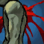
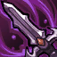
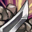
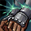
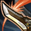
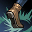
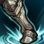
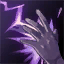
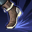

Doombringer
Tyrr Doombringer
Abyssal BlazeLv. 15
Fires a magical arrow with 5 power.
Blade RushLv. 15
Rushes forward and attacks nearby enemies making them bleed for 20 sec. and lose 160 HP per sec. Requires an ancient sword or a sword. Over-hit.
Base success rate: 60%
Attack type: Bleed (Physical)
Base success rate: 60%
Attack type: Bleed (Physical)
Blood Pact
Through Blood Contract, party members' Max HP +10%, HP Recovery Rate +10 for 2 min.
Body Reconstruction
Recovers all HP by reconstructing your body.

ContagionLv. 17
Strikes the bleeding enemy with 6143 power. Requires an ancient sword or a sword. Ignores Shield Defense. Over-hit.
CourageLv. 3
For 1 min., Confusion Resistance +40.
Crushing PainLv. 21
Attacks the enemy with 5242 power. Requires an ancient sword, a two-handed sword, a blunt weapon, a spear, a fist weapon, dual blunt weapons or dual swords. Ignores Shield Defense. Over-hit.
Dark ArmorLv. 2
Dark Resistance +7.

Dark Flash
Increases Dark attacks by 10.

Dark SmashLv. 42
Attacks the enemy with 849 power. Requires an ancient sword, a two-handed sword, a blunt weapon, a spear, a fist weapon, dual blunt weapons or dual swords. Over-hit.

DisarmLv. 26
Weakens the enemy's grip on the weapon for 8 sec. P. Atk./ M. Atk. -25%, Atk. Spd./ Casting Spd. -10%. The weapon is not removed. Requires an ancient sword, a two-handed sword, a blunt weapon, a spear, a fist weapon, dual blunt weapons or dual swords.
Base success rate: 70%
Inflicted status: Obstruction (Disarm, Hold, Blind, Block, Aggression, Silence, Banishment, Bluff, Stealth).
Base success rate: 70%
Inflicted status: Obstruction (Disarm, Hold, Blind, Block, Aggression, Silence, Banishment, Bluff, Stealth).
Enuma ElishLv. 6
Attacks enemies in the front using the Sword of Creation with 6060 power. Over-hit.
Erase Mark
Removes minor Death Mark.
Eye for Eye
For 10 sec., returns received damage back to the enemy.
Final Secret
For 30 sec., Skill Power and damage absorption of basic attacks in PvP +30%.
Fortitude
Confusion Resistance +30. MP Consumption depends on your level.
Furious SoulLv. 2
For 1 min. 30 sec., Critical Rate for basic attacks +20%, Critical Damage for basic attacks +25%, P. Def. -5%.
Hurricane RushLv. 18
Rushes to the enemy attacking them and stunning for 3 sec. Requires a sword, a blunt weapon, a spear, a fist weapon, dual blunt weapons or dual swords.
Base success rate: 70%
Attack type: Stun (Physical)
Base success rate: 70%
Attack type: Stun (Physical)
Mass DisarmLv. 6
Disarms nearby enemies for 5 sec.
Base success rate: 60%
Attack type: Disarm (Physical)
Base success rate: 60%
Attack type: Disarm (Physical)
Relax
While sitting, recovers HP, MP and CP quickly. Can not be used in combat. Consumes 10 Relax Holy Water.
ScornLv. 3
Provokes the enemies to the front with 1630 Power.
Shoulder ChargeLv. 42
Rushes in to attack the enemy stunning them for 9 sec. Requires an ancient sword, a two-handed sword, a blunt weapon, a spear, a fist weapon, dual blunt weapons or dual swords. Over-hit.
Base success rate: 70%
Attack type: Stun (Physical)
Base success rate: 70%
Attack type: Stun (Physical)

Slashing BladeLv. 36
Attacks nearby enemies with 905 power. Requires an ancient sword, a two-handed sword, a blunt weapon, a spear, a fist weapon, dual blunt weapons or dual swords. Over-hit.
Soul Barrier
Creates the soul barrier. For 30 sec., Bow Resistance +10, Crossbow Resistance +10, M. Def. +100%.
Soul Cleanse
Removes up to three debuffs. Can only be used on characters of your race.
Soul Roar
Instantly recovers Max HP/ CP by 15% and for 10 min., and increases your Max HP/ CP by 15%.
Spread WingLv. 30
Spreads the wings to attack nearby enemies with 996 power. Over-hit.

Storm AssaultLv. 33
Makes a hurricane-like assault on the target and nearby enemies with 853 power. Requires an ancient sword, a two-handed sword, a blunt weapon, a spear, a fist weapon, dual blunt weapons or dual swords. Over-hit.
Strike Back
Transfers damage received from melee attacks and skills back to the enemy. Continuously consumes MP proportionately to your level.
Sword ShieldLv. 2
For 30 sec., P. Def. +2000 and Speed -40%.
True BerserkerLv. 2
P. Def. +10%, P. Evasion -2. P. Atk./ Atk. Spd. +5%, P. Accuracy +2. MP Consumption depends on your level.
Violent TemperLv. 17
For 30 sec., the enemy's P. Def. -23%, Casting Spd. -15%.
Base success rate: 70%
Base success rate: 70%
Ancient Sword MasteryLv. 45
When using an ancient sword, P. Atk. +5.2.
Archer's Will
When using a bow or a crossbow, P. Accuracy +8, range +50. Increases P. Skill Power and Critical Rate for basic attacks on attack.
Armor MasteryLv. 5
P. Def. +13, MP Recovery Rate +10%, P. Evasion +3.
Critical SenseLv. 4
Critical Rate for basic attacks +10%, Critical Damage for basic attacks +111.
CrystallizeLv. 3
Allows you to crystallize B-grade equipment.
Expose Vulnerability
Gives flesh and takes bones. Decreases the enemy's P. Def. by exposing their weakness when hit. Increases Critical Rate for basic attacks.
Fighter's Will
When using a melee weapon, P. Atk. +100, Atk. Spd. +10%. Increases P. Skill Power and Critical Rate for basic attacks on attack.
Light Armor MasteryLv. 50
P. Def. +0.9, P. Evasion +3, received Critical Rate/ Damage from basic attacks -5%.
Magic ImmunityLv. 55
M. Def. +26, M. Damage Resistance +5%.
Protection of Alignment
Resistance to tendency attributes +20. When damage is incurred, has a chance of additionally increasing M. Def. and Resistance to elemental attributes momentarily.
Protection of Elemental
Resistance to elemental attributes +20. When damage is incurred, has a chance of additionally increasing M. Def. and Resistance to elemental attributes momentarily.
Protection of Rune
M. Def. +15%. When damage is incurred, has a chance of additionally increasing M. Def. and Attribute Resistance momentarily.
Quick Recovery
Increases HP/ MP/ CP Recovery Rate.
Skill Mastery
With a certain chance, resets skill cooldown or doubles its duration. The effect is based on STR.
Weapon MasteryLv. 3
P. Atk. +8.5% and additionally +2.
Trickster
Yul Trickster · 5 new skills on Project4
Dead Eye StanceNew
For 2 min., when using a bow or crossbow, P. Atk. +124, basic attack Critical Damage +10%, Atk. Spd. -10%. When attacked, with a certain chance gives the party P. Atk. and M. Atk. +3% for 30 sec. Only 1 Stance can be active at a time and all Stances share the same cooldown. Requires a bow or crossbow.
Hawk StanceNew
For 2 min., when using a bow or crossbow, P. Evasion +14, M. Evasion +14, Skill Evasion +6%, Speed +10, P. Accuracy +8, P. Atk. -10%. When attacked, with a certain chance gives the party Speed +10 for 30 sec. Only 1 Stance can be active at a time and all Stances share the same cooldown. Requires a bow or crossbow.
Rapid Fire StanceNew
For 2 min., when using a bow or crossbow, P. Atk. +62, Atk. Spd. +10%, P. Skill Power -5%, attack range and skill range -200. When attacked, with a certain chance gives the party Atk. Spd. and Casting Spd. +3% for 30 sec. Only 1 Stance can be active at a time and all Stances share the same cooldown. Requires a bow or crossbow.
Sniping StanceNew
For 2 min., when using a bow or crossbow, attack range and skill range +200, Stun Atk. Rate +10%, Speed -12. When attacked, with a certain chance gives the party P. Atk. and M. Atk. +3% for 30 sec. Only 1 Stance can be active at a time and all Stances share the same cooldown. Requires a bow or crossbow.
Trigger StanceNew
For 2 min., when using a bow or crossbow, P. Skill Power +5%, P. Skill Cooldown -10%, Atk. Spd. -10%. When attacked, with a certain chance gives the party HP and MP Recovery Rate +15 for 30 sec. Only 1 Stance can be active at a time and all Stances share the same cooldown. Requires a bow or crossbow.
Accuracy
P. Accuracy +3. MP Consumption depends on your level.
Arrow RainLv. 6
Causes arrows to rain down from the sky with 7043 power. For 10 sec., deals Wind damage to the enemies making them lose 300 HP per sec. Requires a bow or crossbow. Critical. Over-hit.
Binding TrapLv. 8
Summons a trap to ensnare the enemy. The skill cooldown is fixed.
Blaze
Cancels the targeting of nearby enemies. For 5 sec. Speed +50. Prevents you from being targeted.
Burst ShotLv. 36
PvE only.
Confusion Decoy
Summons a decoy that receives attacks for you.
Death StingLv. 6
Shoots an arrow to kill. Attacks the enemy with 24306 Power added to P. Atk. Over-hit possible. Critical hit possible. Requires a bow/ crossbow to be equipped. The skill cooldown is fixed.
Detection
Finds any enemies hidden nearby.
Double ShotLv. 42
Shoots 2 arrows in succession to attack the enemy with 984 power. Requires a bow or crossbow. Critical. Over-hit.
Evade ShotLv. 6
Attacks the enemy with 2020 power. P. Evasion +6 for 30 sec. Requires a bow or crossbow. Over-hit.
Flash TrapLv. 5
Summons a Trap which Stuns nearby targets momentarily with intense light. Cancels target. The skill cooldown is fixed.
Focus Skill Mastery
Skill trigger rate +100%, P. Skill Power +10%. MP Consumption is based on your level.
Hamstring ShotLv. 6
Shoots an arrow at the enemy with 1973 power. For 1 min., the enemy's Speed -30%. Requires a bow or crossbow. Critical. Over-hit.
Base success rate: 70%
Attack type: Slow (Magic)
Base success rate: 70%
Attack type: Slow (Magic)
Lethal ShotLv. 6
Shoots a deadly arrow that pierces the target with 7698 power. Requires a bow or crossbow. Critical. Over-hit.
MultishotLv. 6
Attacks multiple enemies with 11,030 power. Requires a bow or a crossbow. Critical. Over-hit. The skill cooldown is fixed.
Pain of Sagittarius
Sacrifices your HP to recover 500 MP.
Real TargetLv. 9
For 30 sec., Bow Resistance -12%, Crossbow Resistance -16%.
Relax
While sitting, recovers HP, MP and CP quickly. Can not be used in combat. Consumes 10 Relax Holy Water.
Seven ArrowLv. 6
Shoots 7 arrows to attack the enemy with 11,440 power. Critical. The skill cooldown is fixed.
Slow TrapLv. 6
Summons a trap that slows nearby enemies. The skill cooldown is fixed.
Stun ShotLv. 45
Fires arrows with 344 power stunning the enemy for 9 sec. Requires a bow or crossbow. Cancels the enemy's target. Over-hit.
Base success rate: 70%
Attack type: Stun (Physical)
Base success rate: 70%
Attack type: Stun (Physical)

Ultimate Evasion
For 30 sec., Evasion +20, P. Skill Evasion +25%, Buff Cancel Resistance +80.
Vicious StanceLv. 20
Critical Damage for basic attacks +35. MP Consumption depends on your level.
Acrobatic MoveLv. 3
P. Evasion +4 when running.
Acrobatics
Maximum height user can fall without taking damage +60.
Archer's Will
When using a bow or a crossbow, P. Accuracy +8, range +50. Increases P. Skill Power and Critical Rate for basic attacks on attack.
Archery
When using a bow or crossbow, P. Atk. +200, attack range +50.
Armor MasteryLv. 5
P. Def. +13, MP Recovery Rate +10%. Additionally, P. Evasion +3 when using light armor.
Attack Speed BoostLv. 2
Atk. Spd. +5%.
Boost Breath
Breath gauge +180.
Boost Evasion
P. Evasion +2.
Bow MasteryLv. 52
When using a bow or crossbow, P. Atk. +10.3.
Critical Damage
Critical Damage for basic attacks +32
Critical Rate
Critical Rate for basic attacks +20%.
CrystallizeLv. 3
Allows you to crystallize B-grade equipment.
EspritLv. 8
Lets you recover quicker while running. HP Recovery Rate +2.5, MP Recovery Rate +1.8.
Fighter's Will
When using a melee weapon, P. Atk. +100, Atk. Spd. +10%. Increases P. Skill Power and Critical Rate for basic attacks on attack.
Light Armor MasteryLv. 50
P. Def. +0.9, P. Evasion +3, received Critical Rate/ Damage from basic attacks -5%.
Long ShotLv. 2
Bow and crossbow range +200.
Magic ImmunityLv. 55
M. Def. +26, M. Damage Resistance +5%.
Protection of Alignment
Resistance to tendency attributes +20. When damage is incurred, has a chance of additionally increasing M. Def. and Resistance to elemental attributes momentarily.
Protection of Elemental
Resistance to elemental attributes +20. When damage is incurred, has a chance of additionally increasing M. Def. and Resistance to elemental attributes momentarily.
Protection of Rune
M. Def. +15%. When damage is incurred, has a chance of additionally increasing M. Def. and Attribute Resistance momentarily.
Quick StepLv. 2
Speed +7
Quiver of HoldingLv. 3
Weight limit +30%.
Skill Mastery
With a certain chance, resets skill cooldown or doubles its duration. The effect is based on STR.
Vital ForceLv. 8
Lets you recover quicker while sitting. HP Recovery Rate +1.9, MP Recovery Rate +1.9.
Weapon MasteryLv. 3
P. Atk. +8.5% and additionally +2.
Soulhound
Feoh Soulhound · 4 new skills on Project4
Aura BlastLv. 6New
Inflicts Holy damage on the target and nearby enemies with 141 power and recovers MP. Inflicts additional Holy damage with 58 power to monsters.
Aura CannonLv. 6New
Inflicts Holy damage on the enemy with 178 Power added to M. Atk. and recovers MP. Inflicts additional Holy damage with 124 Power if the target is a monster.
Aura SymphonyLv. 6New
Inflicts Holy damage on the enemy with 150 Power added to M. Atk.
Curse FearLv. 19New
Inflicts Fear on the enemy forcing them to flee for 9 sec. Holy attribute.
Base success rate: 70%
Attack type: Fear (Magic)
Base success rate: 70%
Attack type: Fear (Magic)
Annihilation CircleLv. 14
PvE only. Attacks the target and enemies around them dealing 108 of holy damage in addition to M. Atk.
Arcane Power
Maximizes spells' efficiency. M. Atk. +30%, MP Consumption +10%. Consumes 30 HP per sec.
Arcane Shield
For 10 sec., received damage -70%, blocks the rest by consuming MP. The effect is cancelled when MP drops to 0. The skill cooldown is fixed.
Body to MindLv. 5
Sacrifices your HP to recover 70 MP.
Curse of DivinityLv. 5
Inflicts Holy damage on the enemy with 108 Power added to M. Atk.
Curse of Life FlowLv. 13
For 30 sec., inflicts a curse on the enemy that causes him to lose the power of life. Recovers the attacker's HP with a certain chance. Holy attribute.
Base success rate: 70%
Base success rate: 70%

Dark FlameLv. 31
Uses holy arts on enemies at the front dealing additionally 76 M. damage. For 5 sec., their Speed -30%.
Base success rate: 60%
Attack type: Slow (Magic)
Base success rate: 60%
Attack type: Slow (Magic)
Enlightenment
For 20 sec., M. Atk. +40%, Casting Spd. +50%, M. Skill Critical Rate +50%. MP Consumption -90%. The skill cooldown is fixed.
Erase MarkLv. 3
Removes major Death Mark.

Hard March
Speed +20. Consumes MP over time based on your level.
Holy Stance
Holy Attack +20. Imbues the spell with the Holy attribute.
LeopoldLv. 6
Summons the devastating Leopold's cannon to inflict holy damage with 5 power.
LightningLv. 15
Sends an electric current to attack nearby enemies with 207 power. Paralyzes them for 3 sec. Enemies' Received Healing -50%. Over-hit. Holy attribute.
Base success rate: 60%
Attack type: Paralysis (Magic)
Base success rate: 60%
Attack type: Paralysis (Magic)
Lightning Barrier
Spreads lightning's defensive barrier for 20 min. Paralyzes the target that attacked you.
Painkiller
For 8 sec., suppresses your pain making you invincible.
<font color="B09B79">Type: Invincibility.</font>
Immunity to damage and debuffs
<font color="B09B79">Type: Invincibility.</font>
Immunity to damage and debuffs
Relax
While sitting, recovers HP, MP and CP quickly. Can not be used in combat. Consumes 10 Relax Holy Water.
Self Heal
Restores your own HP. Power 107.
Shadow BindLv. 16
Catches the enemy's shadow and holds them for 8 sec. Holy attribute.
Base success rate: 70%
Attack type: Hold (Magic)
Base success rate: 70%
Attack type: Hold (Magic)
Soul Cleanse
Removes up to three debuffs. Can only be used on characters of your race.
Soul StrikeLv. 6
Inflicts holy damage with 108 Power added to M. Atk. Absorbs 40% of the damage as HP.
Soul VortexLv. 6
Creates a vortex that deals 154 Holy damage in addition to M. Atk. Absorbs 25% of the damage as HP. For 30 sec., Speed -10%, Atk. Spd./ Casting Spd. -10%, Holy Resistance -20. Consumes 13.2 MP per sec.
Base success rate: 70%
Base success rate: 70%
Soul Vortex ExtinctionLv. 6
Detonates a Soul Vortex to inflict Holy damage on the enemy with 195 power.
Soul WebLv. 12
Catches the target in a soul net, their Speed -30% for 1 min. Holy attribute.
Base success rate: 60%
Attack type: Slow (Magic)
Base success rate: 60%
Attack type: Slow (Magic)
Soul of PainLv. 35
Unleashes a soul to inflict holy damage on the enemy with 108 power, cancelling their target.
Steal DivinityLv. 5
Steals up to 7 of the enemy's buffs. Cannot be used on monsters. Holy attribute.
Surrender to HolyLv. 47
For 30 sec., the enemy's Holy Resistance -25, Dark Resistance +12.
Base success rate: 70%
Base success rate: 70%
Voice BindLv. 14
Blocks the enemy's M. skills for 12 sec. Holy attribute.
Base success rate: 70%
Attack type: Silence (Magic)
Base success rate: 70%
Attack type: Silence (Magic)
Abyssal Power
When using light armor, M. Atk. +10%.
Anti-magicLv. 45
M. Def. +14, Magic Damage Resistance +5%.
Armor MasteryLv. 5
P. Def. +13, MP Recovery Rate +10%, P. Evasion +3.
CrystallizeLv. 3
Allows you to crystallize B-grade equipment.
Fast SpellcastingLv. 3
Casting Spd. +5%.
Higher Mana GainLv. 27
Increases MP Recovery Rate.
Magician's Will
M. Atk. +5%, Casting Spd. +5%, M. Skill Critical Rate +5%. MP Consumption -5%.
Mana BoostLv. 8
Max MP +30.
Protection of Alignment
Resistance to tendency attributes +20. When damage is incurred, has a chance of additionally increasing M. Def. and Resistance to elemental attributes momentarily.
Protection of Elemental
Resistance to elemental attributes +20. When damage is incurred, has a chance of additionally increasing M. Def. and Resistance to elemental attributes momentarily.
Protection of Rune
M. Def. +15%. When damage is incurred, has a chance of additionally increasing M. Def. and Attribute Resistance momentarily.
Quick HP RecoveryLv. 6
HP Recovery Rate +1.1.
Quick Mana RecoveryLv. 7
MP Recovery Rate +1.1.
Quick RecoveryLv. 2
Increases HP/ MP/ CP Recovery Rate.
Robe MasteryLv. 41
When using robes, P. Def. +1.7.
Sigil Mastery
When using a sigil, M. Atk. +4%, MP Recovery Rate +17%.
Sixth Sense
When stamina is at its limit, sensation reaches its peak. P. Evasion +15 when HP < 30%.
Skill Mastery
With a certain chance, resets skill cooldown or doubles its duration. The effect is based on INT.
Spellcraft
Increases Casting Spd. when equipped with a robe jacket and robe pants.
Weapon MasteryLv. 3
P. Atk. +8.5% and additionally +2.